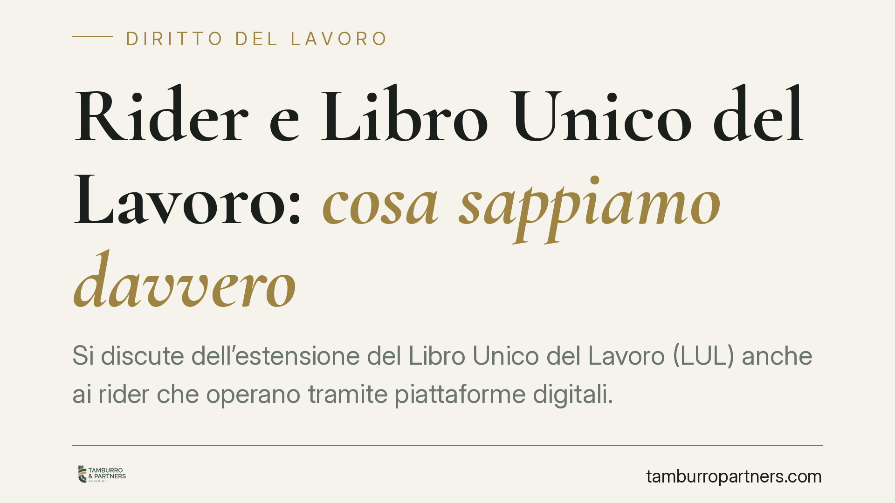

Rider e Libro Unico del Lavoro: cosa sappiamo davvero
Si discute dell'estensione del Libro Unico del Lavoro (LUL) anche ai rider che operano tramite piattaforme digitali. Il tema tocca committenti e lavoratori autonomi, ma allo stato manca un provvedimento definitivo con estremi certi. Prima di modificare gli adempimenti conviene distinguere ciò che è vigente da ciò che è solo annunciato, evitando conclusioni premature sulla natura del rapporto.

Il quadro: cosa è confermato e cosa no
Nelle ultime settimane è tornata al centro del dibattito l'ipotesi di registrare nel Libro Unico del Lavoro (LUL) anche i rider che operano tramite piattaforme, inclusi quelli con partita IVA o con contratto di prestazione occasionale.
È opportuna una premessa di metodo. Alla data di questo contributo non risulta pubblicato un provvedimento ministeriale con estremi puntuali (decreto, circolare o nota dell'Ispettorato) che introduca in modo definitivo tale obbligo per i rider autonomi. Le notizie di stampa riferiscono di uno schema di intervento in fase di definizione. Finché il testo non è ufficiale, con numero e data, l'adempimento va trattato come prospettato e non come vigente.
Inquadramento normativo
Il LUL è disciplinato dall'art. 39 del D.L. 25 giugno 2008, n. 112, convertito con modificazioni dalla L. 6 agosto 2008, n. 133. La norma pone l'obbligo di istituzione e tenuta del LUL in capo ai datori di lavoro privati, con esclusione del datore di lavoro domestico. Nella sua formulazione attuale, l'art. 39 non contempla espressamente i committenti di lavoratori autonomi: un'estensione ai rider con partita IVA richiederebbe quindi una disposizione ad hoc.
Sul versante delle tutele, i rider trovano una disciplina specifica nel Capo V-bis del D.Lgs. 15 giugno 2015, n. 81 (artt. 47-bis e seguenti), che regola i lavoratori autonomi che svolgono attività di consegna beni tramite piattaforme. Va però precisato che tali articoli riguardano compensi, copertura assicurativa e condizioni di lavoro: non prevedono, di per sé, un obbligo di registrazione nel LUL. Il collegamento tra le due discipline, allo stato, è di natura interpretativa e non risulta esplicitato da una norma vigente.
Sul piano europeo, il riferimento è la Direttiva (UE) 2024/2831 del Parlamento europeo e del Consiglio, del 23 ottobre 2024, relativa al miglioramento delle condizioni di lavoro nel lavoro mediante piattaforme digitali (Platform Work Directive). La direttiva incide sulla presunzione di subordinazione e sulla gestione algoritmica, e va recepita dagli Stati membri entro il termine da essa fissato. Non introduce direttamente un obbligo LUL: la sua rilevanza è nel possibile impatto sulla qualificazione del rapporto.
Un profilo di attenzione
È centrale un chiarimento tecnico. L'eventuale registrazione di un rider nel LUL sarebbe un adempimento di natura formale-documentale e non comporterebbe, di per sé, la riqualificazione automatica del rapporto come subordinato.
La qualificazione resta questione sostanziale: dipende dalle concrete modalità di esecuzione della prestazione (etero-organizzazione, vincoli di orario, controllo algoritmico), secondo i criteri desumibili dall'art. 2094 c.c. e dall'art. 2 del D.Lgs. 81/2015. L'errore da evitare è duplice: leggere l'iscrizione nel LUL come prova di subordinazione, oppure ritenere che l'assenza di iscrizione escluda un rapporto di fatto subordinato. Sono piani distinti.
Implicazioni pratiche
Per le piattaforme e i committenti l'impatto operativo, ove l'obbligo fosse confermato, riguarderebbe la tracciabilità di consegne e compensi e l'organizzazione dei flussi contabili e documentali. Per i rider, la registrazione inciderebbe sulla trasparenza dei corrispettivi, senza modificare automaticamente inquadramento previdenziale o natura del contratto.
In ogni caso, la prudenza consiglia di non ridisegnare i processi sulla base di anticipazioni giornalistiche, ma di attendere il testo ufficiale e verificarne l'ambito soggettivo e l'eventuale disciplina transitoria.
Cosa fare in concreto
- Monitorare la Gazzetta Ufficiale e i canali del Ministero del Lavoro per l'eventuale provvedimento definitivo, annotandone estremi (numero, data, decorrenza).
- Mappare i rapporti attivi con rider, distinguendo per tipologia contrattuale (autonomo con partita IVA, prestazione occasionale, subordinato).
- Predisporre, in via precauzionale, un sistema di tracciamento ordinato di consegne e compensi, senza attribuirgli valore qualificatorio.
- Rivedere le modalità concrete di esecuzione della prestazione alla luce dei criteri di etero-organizzazione, per anticipare eventuali profili di rischio di riqualificazione.
- Verificare lo stato di recepimento della Direttiva (UE) 2024/2831, che potrà incidere sulla presunzione di subordinazione.
Disclaimer
Contributo informativo a cura di Tamburro & Partners Avvocati - Avv. Giuseppe Tamburro. Non costituisce parere legale.
Ogni storia di lavoro ha i suoi tempi.
Se gestisci HR e vuoi un confronto su contenzioso, ispezioni o licenziamenti, scrivi allo studio. Ti rispondiamo entro un giorno lavorativo.